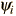

The HamiltonianAssociated with each measurable parameter in a physical system is a quantum mechanical operator, and the operator associated with the system energy is called the Hamiltonian. The Hamiltonian contains the operations associated with the kinetic and potential energies and for a particle in one dimension can be written: Operating on the wavefunction with the Hamiltonian produces the Schrodinger equation. In the time independent Schrodinger equation, the operation may produce specific values for the energy called energy eigenvalues. This situation can be shown in the form where the specific values of energy are called energy eigenvalues and the functions  are called eigenfunctions. In addition to its role in determining system energies, the Hamiltonian operator generates the time evolution of the wavefunction in the form The full role of the Hamiltonian is shown in the time dependent Shrodinger equation where both its spatial and time operations manifest themselves.
|
Index Schrodinger equation concepts Postulates of quantum mechanics | |
| HyperPhysics***** Quantum Physics | Go Back |